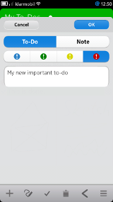
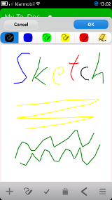
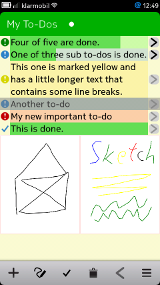
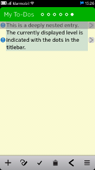
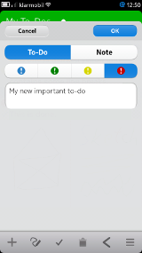
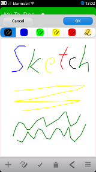
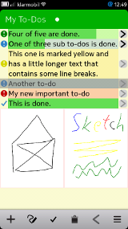
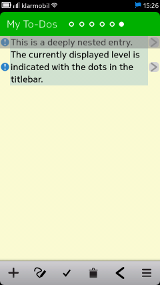

Q To-Do
A Simple and Easy to Use To-do List Organizer
About
Screenshots
Download/Installation
Usage
License
About
Q To-Do is a simple to-do list organizer for Jolla (SailfishOS), BlackBerry (BB10) Z10, Q10, and Q5, MeeGo/Harmattan (Nokia N9), Mer (Nemomobile, Plasma Active), and Desktops (both Linux and Windows). It features a clear, simple, and easy to use user interface.
Q To-Do allows you to maintain nested to-dos as well as notes and sketches. You can indicate the importance of a to-do via four colors, edit to-dos, notes, and sketches, and mark to-dos as done. A progress bar shows a summary about nested to-dos.
Furthermore, you can easily synchronize your to-dos with your desktop. Please note that you need to have an e-mail account that supports IMAP and the Q To-Do desktop version for this.
Features
The main features of Q To-Do are:
- Simple and Easy to Use User Interface
- Available for Smartphones (BlackBerry (BB10) Z10, Q10, and Q5, Nokia N9, and Nemomobile), Tablets (Plasma Active), and Desktops (Linux, Windows)
- Synchronization between Different Installations, e.g., Smartphone and Desktop (Requires an e-mail account with IMAP support.)
- Support for Touch Screens and "Normal" Mouse/Keyboard Control
- Intuitive Swipe Gestures in all Versions
- Simple Sketches
- Nested To-Dos
- Progress Bar
- Indicator for Nesting Level
- Keyboard Shortcuts for Desktop Version
- Batch Delete of Done Items
- Different Colors for To-Dos
- System Tray Icon (Desktop Version)
Screenshots
Nokia N9
 







Download/Installation
Q To-Do is currently available for BlackBerry (BB10) Z10, Q10, and Q5, Nokia N9 (MeeGo/Harmattan), Mer (Nemomobile, Plasma Active), and Desktops (Linux, Windows).
Jolla (SailfishOS)
The SailfishOS version can be installed via OpenRepos.
BlackBerry (BB10) Z10, Q10, and Q5
The BB10 version can be installed via BlackBerry World.
Nokia N9 (MeeGo/Harmattan)
The MeeGo/Harmattan version can be installed via the Nokia Store.
Mer (Nemomobile, Plasma Active)
The Mer version can be found in the Mer apps repository. To install it simply run "zypper in qtodo" as root on your Mer device. Please note: if you have problems installing Q To-Do on Plasma Active you need the "nemo-compatibility" package.
Desktop (Linux, Windows)
The Desktop Linux and Windows versions can be downloaded from here:
These files are archives, which can be simply extracted in any place. In order to run Q To-Do execute "qtodo.exe" (Windows Version) or "qtodo.sh" (Linux Version).
Usage
Getting Started
On the first start no entries will be present. To add new entries simply click "+" in the toolbar. Please note: there are two types of text entries (For now, we skip sketches.) "to-dos" and "notes". To-dos can have subentries, notes don't.
Subentries
To-dos can have subentries. This way entries can be grouped logically. One use case is to create an overall task and define the subtasks as nested elements. Q To-Do allows an arbitrary depth of nested elements. The "dot indicator" in the titlebar shows the currently displayed level.
To navigate to subentries of a to-do mark the to-do and swipe from right to left. You should see the list move side-ways as you do it. Alternatively, you can click the small arrow button on the right side of a to-do entry. To navigate to the parent items simply swipe from left to right or click the arrow pointing to the left in the toolbar.
To add sub-entries to a new todo entry simply navigate to the list showing the sub-entries as described above. You will see an empty list. There you can then add new entries the same way you did before after Q To-Do was started for the first time.
Progress Bar
A "progress" bar indicates the progress of to-dos containing other to-dos. See also the screenshots above.
Sketches
It is possible to add simple sketches. To add a sketch press the button showing the pencil and drawing pictogram right of the "+" button in the toolbar.
In the to-do list view, sketches will be displayed downsized to a quarter of the original size (half width and half height). Sketches can be moved, edited, and deleted like all other elements.
Reorder Entries
To reorder entries use a two finger gesture. Select the entry you want to move, keep it pressed, and with a second finger move up or down.
Double-click/Long-press
Double-clicking an entry opens the edit field. Long-pressing opens a menu with more options.
Synchronization
Q To-Do offers a synchronization feature. With this synchronization feature it is possible to synchronize data between different Q To-Do instances. The probably most common use case for the synchronization feature is to synchronize to-dos between smartphones and desktop computers. However, synchronizing between different desktop computers, e.g., at home and at work, is also very handy.
The synchronization process is initiated via the main menu. There exist two options: synchronize the to-do list and synchronize the sketch files. It is recommended to first synchronize the to-do list and, if desired, synchronize the sketches afterwards. Please note that synchronizing the sketches is optional as it takes more time and requires more space.
Before the synchronization feature can be used some requirements must be fulfilled and settings need to be set up. Below are the instructions for setting up the synchronization functionality.
General Requirements
Q To-Do uses the IMAP protocol for its synchronization feature. IMAP is most commonly used in the context of e-mails. So, the basic requirement for using the Q To-Do synchronization functionality is an e-mail account with IMAP support.
BlackBerry (BB10) Z10, Q10, and Q5, and Desktop (Linux, Windows)
In oreder to be able to use the synchronization feature, the account details (server address, username, and password) need to be set up first. To do this, open the menu in Q To-Do and choose the point "Sync Account Settings".
To add a new account click "New". Then you can insert the account details. The account name is a freely choosable name that is only used for identifying the account within Q To-Do. The user name is the user name of your e-mail account, the password is the according e-mail account password and server is the address of the e-mail server you are using. The other settings like port number etc. are already set to default values. If you have problems logging in please notify me via e-mail. I will try to assist you in this case.
Once you have finished entering the account details, click "Save". The newly created account should appear in the account list. Select the newly created account and click "OK".
I hope the pre-defined default values make sense for most e-mail providers out there. If you happen to have issues with setting up the synchronization feature, feel free to contact me via e-mail.
Nokia N9 (MeeGo/Harmattan)
In order to use the synchronization feature on the Nokia N9 (MeeGo/Harmattan) it is required to set up an e-mail account that supports IMAP. This is done via the Nokia N9 accounts app. Once an e-mail account with support for the IMAP protocol was set up, the synchronization feature can be used out of the box.
In case you have multiple e-mail accounts with support for the IMAP protocol, you need to select one for synchronization. To do this open the menu and click "Sync Account Settings". From the list select the account you want to use and press "OK".
Keyboard Interaction (Desktop Versions)
The desktop versions allow interaction via the keyboard. In the following the basic shortcuts are introduced.- Navigating the List View: Arrow Keys (and h,j,k,l vi-like Bindings)
- Add a new entry: i or +
- Delete an entry: d
- Cancel an action: ESC
- Confirm an action: ENTER or RETURN
- Synchronize: CTRL+S
- Synchronize sketches: CTRL+SHIFT+S
- Clean items marked done: CTRL+C
- Global Shortcut to Toggle hide: CTRL+SHIFT+Y
System Tray Icon (Desktop Version)
The desktop version has a system tray icon. With this icon Q To-Do can be easily hidden and shown via double-click. As another convenience functionality there is a global keyboard shortcut (CTRL+SHIFT+Y) to show/hide Q To-Do.
Furthermore, additional settings can be applied via the system tray icon, like forcing the window to stay on top (Linux and Windows version) or disabling the window borders (Linux version only).
License
This section is intended to give an overview of the software and technologies used in Q To-Do. Additionally, a list of licenses, copyrights, and trademarks is given. Though, no claim for completeness is made.
Q To-Do
Copyright 2011-2013, Ruediger Gad <r.c.g@gmx.de>
Q To-Do is free software: you can redistribute it and/or modify it under the terms of the GNU General Public License as published by the Free Software Foundation, either version 3 of the License, or (at your option) any later version.
Q To-Do is distributed in the hope that it will be useful, but WITHOUT ANY WARRANTY; without even the implied warranty of MERCHANTABILITY or FITNESS FOR A PARTICULAR PURPOSE. See the GNU General Public License for more details.
You should have received a copy of the GNU General Public License along with Q To-Do. If not, see http://www.gnu.org/licenses/.
Libraries
Except of the standard C and C++ libraries, Q To-Do, depending on the actual platform and version, makes use of the following libraries: LibQxt, OpenSSL, qmlcanvas, Qt, and the Qt Messaging Framework (QMF).
LibQxt (Qt Extension Library), Copyright (C) 2007 Qxt Foundation, is licensed under the terms of either the Common Public License (CPL) version 1.0 or the GNU Lesser General Public License (LGPL) version 2.1. See also the homepage: http://dev.libqxt.org/libqxt/wiki/Home
Note that compiled OpenSSL libraries are only included for the Windows version. Please see also the remarks about the Windows version below. Following is an excerpt of the OpenSSL licensing explanation: "... The OpenSSL toolkit is licensed under an Apache-style licence which basically means that you are free to get and use it for commercial and non-commercial purposes. ...". See also: http://www.openssl.org/about/
qmlcanvas, Copyright (C) 2010 Nokia Corporation and/or its subsidiary(-ies), is licensed under the term of the BSD license. See also the qmlcanvas gitorious page: https://qt.gitorious.org/qt-labs/qmlcanvas
The Qt Toolkit is Copyright (C) 2012 Digia Plc and/or its subsidiary(-ies) and other contributors. Qt is licensed either under a commercial license agreement, the GNU Lesser General Public License (LGPL) version 2.1, or the GNU General Public License (GPL) version 3.0. See also: http://qt-project.org/doc/qt-4.8/licensing.html
The Qt Messaging Framework (QMF), Copyright (C) 2010 Nokia Corporation and/or its subsidiary(-ies) and later Copyright (C) 2013 Digia Plc and/or its subsidiary(-ies) (Please refer to the actual QMF version for the actual licensing/copyright information.), is licensed under the terms of the GNU Lesser General Public License (LGPL) version 2.1. See also the QMF gitorious page: http://qt.gitorious.org/qt-labs/messagingframework
The Windows version of Q To-Do also ships with libraries part of the MinGW runtime. These libraries are public domain, and are not governed by copyright. See also: http://www.mingw.org. All libraries based on GNU tools are licensed under the terms of the GPL. Furthermore, the Windows version ships with libraries from the OpenSSL project. The compiled OpenSSL libraries had been extracted from pre-compiled packages of OpenSSL that had been downloaded from: http://slproweb.com/products/Win32OpenSSL.html
Header Files
Additionally to above mentioned libraries the git repository of Q To-Do contains unmodified header files of LibQxt and QMF. For the detailed licenses etc. please see the respective header files.
Packaging
The Windows version ships with dynamic link libraries (DLLs) and executables taken from LibQxt, MinGW, OpenSSL, qmlcanvas, Qt, and QMF. The LibQxt, qmlcanvas, and QMF binaries and executables had been compiled from the source tarballs that can be found in the Q To-Do repository.
The Linux version ships with libraries and executables taken from LibQxt, qmlcanvas, and QMF. The LibQxt, qmlcanvas, and QMF binaries and executables had been compiled from the source tarballs that can be found in the Q To-Do repository. For running Q To-Do, additionally, Qt is required. For installing Qt please refer to the manual of your Linux distribution.
The Harmattan version of Q To-Do ships with the qmlcanvas library. The qmlcanvas library had been compiled from the source tarball that can be found in the Q To-Do repository.
The Mer version (e.g. the version that ships with Nemomobile) does not ship with additional libraries. All required libraries are shipped with Mer.
Trademarks
Linux is a registered trademark of Linus Torvalds.
Nokia and respective logos are trademarks of Nokia Corporation in Finland and/or other countries worldwide.
Digia, Qt, and the Qt logo are registered trademarks of Digia plc and/or its subsidiaries and is used pursuant to a license from Digia plc and/or its subsidiaries.
Windows is a registered trademark of Microsoft Corporation in the United States and other countries.
All other trademarks are property of their respective owners.